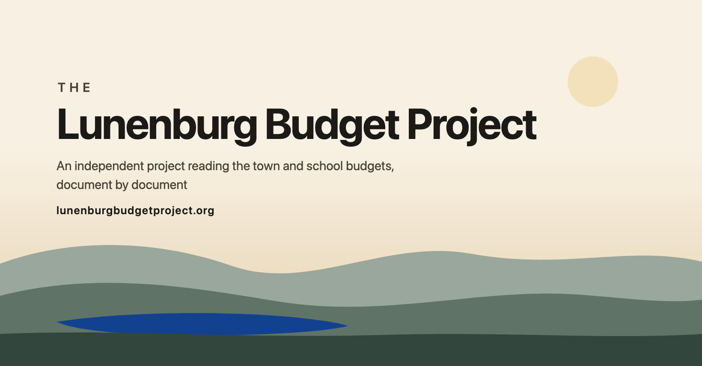
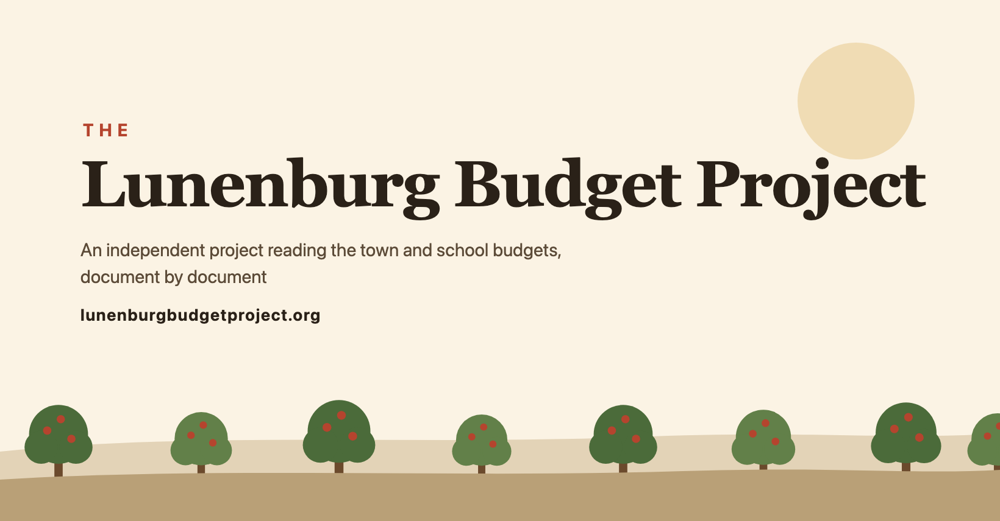
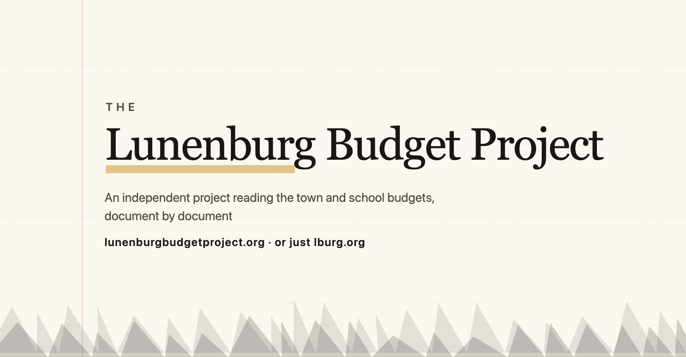

One idea in two sizes, three times over. Generated by
scripts/build_brand_assets.py. Nothing here is published — a chosen option
gets moved into fy28/public/ deliberately. The cover is
1640 × 856 with everything that matters inside the centre
1440 × 560.
A The Ridge
The town seen whole, at the end of the day. Landscape, calm, looked at from a distance. The ONLY option that uses the brand blue — as one small lake, low in the frame and far from the wordmark.

32 / 16 on light
32 / 16 on dark
The Lunenburg Budget Project
Lunenburg, MA
Red is what the mobile crop and the group-name overlay can take.
Everything that matters sits inside the dashed box.
B The Orchard
A neighbour, in harvest colours. Agricultural rather than civic: nothing in a barn-red apple resembles a letterhead. No blue at all. The warmest and the least institutional.

32 / 16 on light
32 / 16 on dark
The Lunenburg Budget Project
Lunenburg, MA
Red is what the mobile crop and the group-name overlay can take.
Everything that matters sits inside the dashed box.
C The Margin
A page, not a poster. Paper, a wordmark, one marked line, and a hairline treeline. Says the work is reading, done in public. No blue; the accent is a highlighter ochre.

32 / 16 on light
32 / 16 on dark
The Lunenburg Budget Project
Lunenburg, MA
Red is what the mobile crop and the group-name overlay can take.
Everything that matters sits inside the dashed box.
All three at the size that decides them
32 pixels is where a mark survives or does not. Magnified 8× for the
silhouette, then actual size on light and on dark.